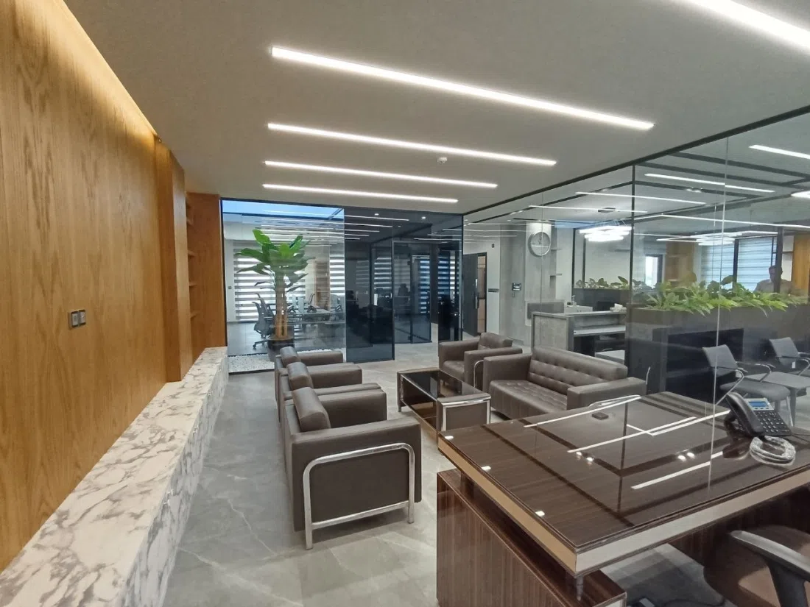

OFFICE PROJECTS
پروژههای اداری
طراحی و اجرای یکپارچه فضاهای مدیریتی و کار گروهی، از برنامهریزی پلان تا نور، متریال و مبلمان ثابت.
۳ پروژه · ۲۹ تصویرSELECTED WORKS
پروژههای اجراشده
تصاویر براساس فضا و هویت هر پروژه تفکیک شدهاند. برای مشاهده جزئیات کامل روی کارت کلیک کنید.